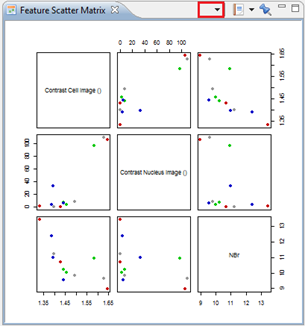

The Feature Scatter Matrix places different scatter plots in a matrix. The scatter plots are made with the correlation between different selected features.
This plot allows you to compare the correlation between different features through scatter plots. You can add features by clicking on the reversed triangle highlighted below with a red frame.
